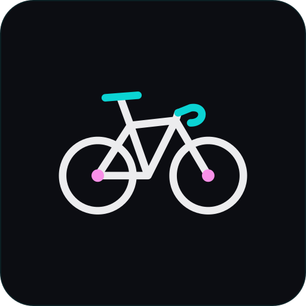
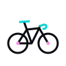
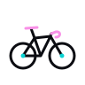

Brand companion
The Bike
One iconic gravel bike — always drawn the same, like a signature. Authentic (cycling is genuine, not decoration), understated, and built from the same palette as everything else: one pink and one cyan accent on an ink base. It appears quietly — README, 404, loading states, stickers — never on the hero.

App icon ·
bike-tile.svgInk tile, cyan hairline — for avatars, stickers and social.

Primary
bike.svg · light on ink
Light surface
bike-ink.svg · ink on lightOne-color
bike-mono.svg · currentColorApp icon
bike-tile.svgSwapped accents
Pink ↔ Cyan
Same signature, accents traded: the saddle and handlebar carry the pink, while the hubs turn cyan. A subtle alternate for contexts where the palette needs to flip.

Primary
bike-alt.svg · light on ink
Light surface
bike-ink-alt.svg · ink on lightApp icon
bike-tile-alt.svg